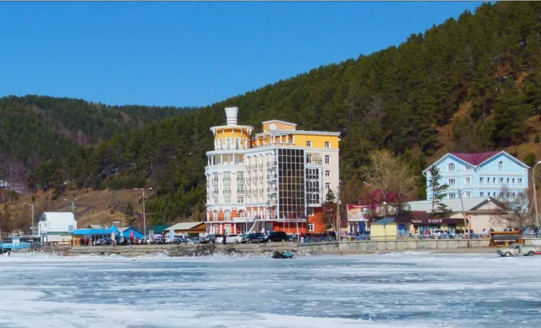
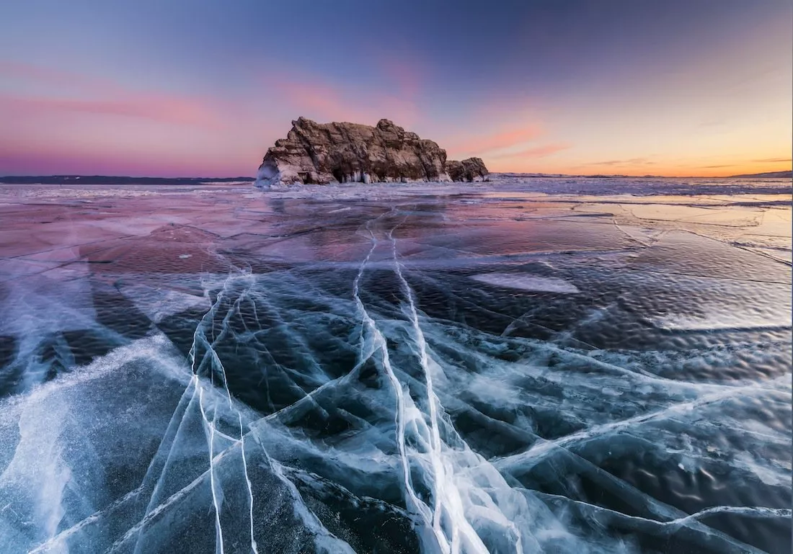
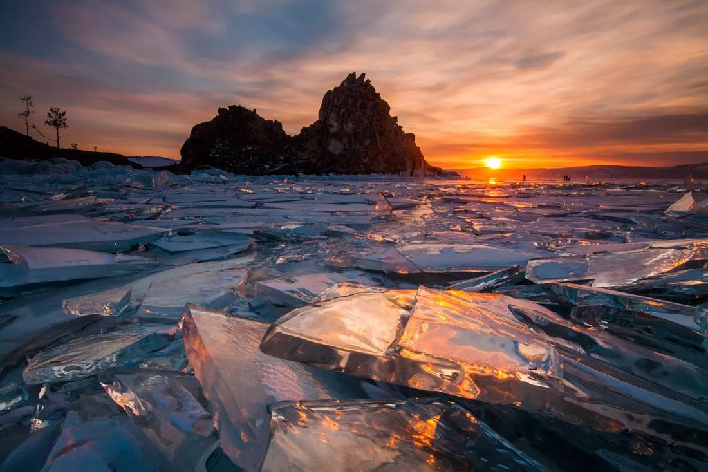
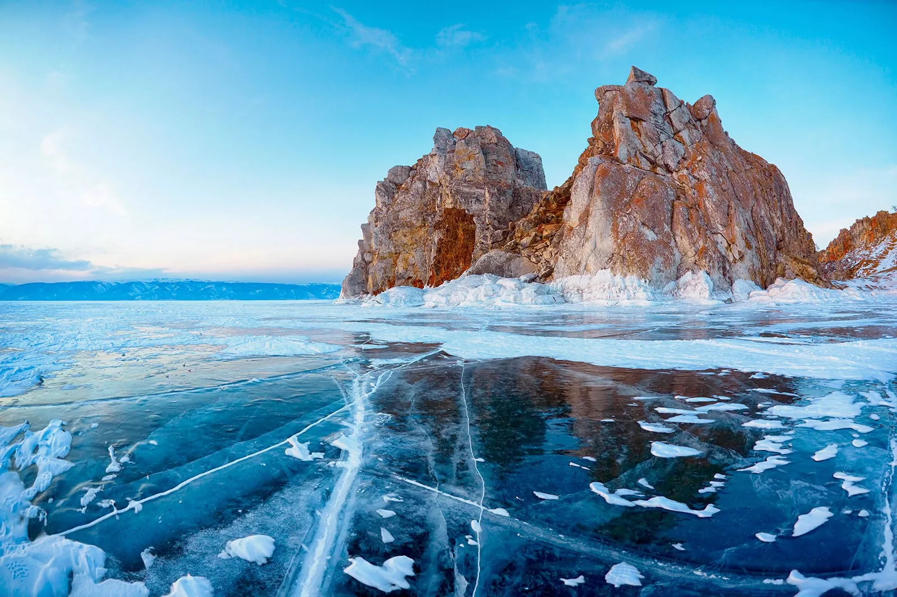
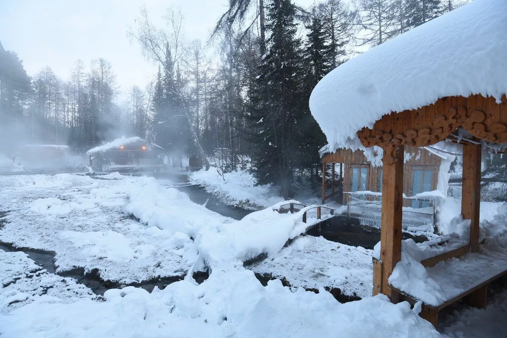
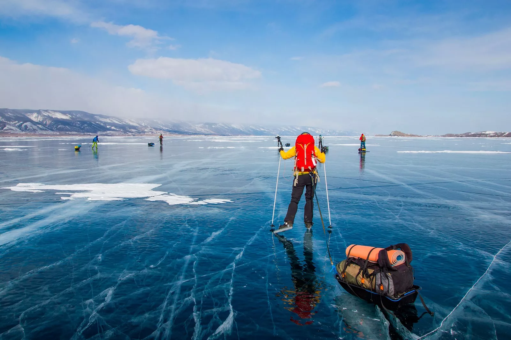
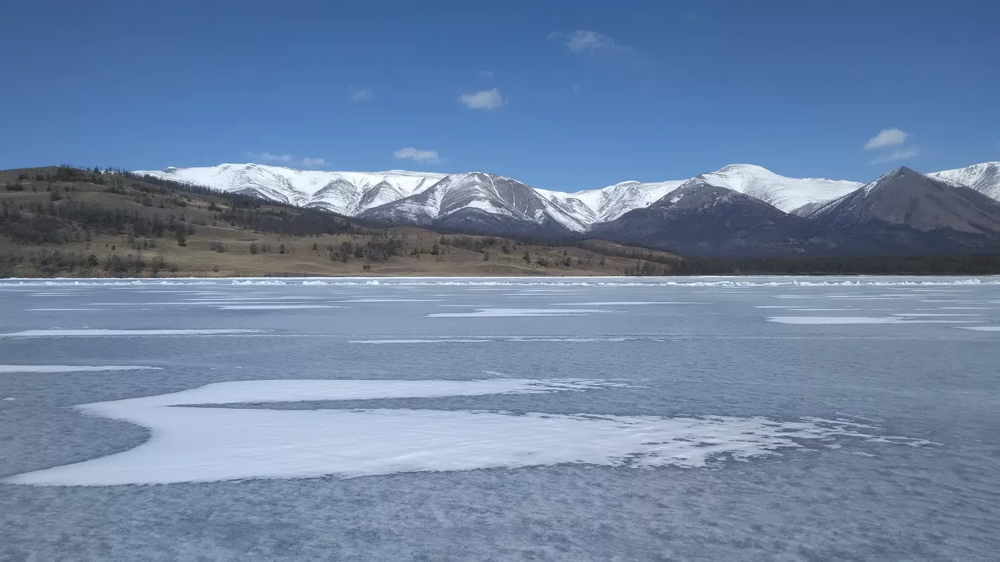
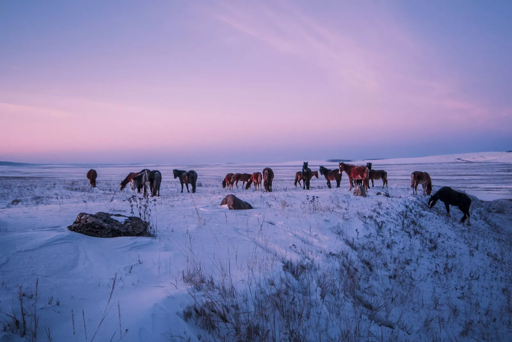

О туре
8 – дневный тур для опытных путешественников, не боящихся суровых сибирских морозов. За 8 дней на снегоходах Вы пересечете Байкал от юга до севера, погрузитесь в чарующую атмосферу ледяного царства – увидите самый прекрасный байкальский лёд, гроты, наплески. У вас будет уникальная возможность узнать, что такое настоящая сибирская тайга, Вы сможете поучаствовать в подледной рыбалке, зарядиться энергией магических островов, отдохнуть в термальных бассейнах с видом на Байкал и насладиться уникальной красотой сибирской природы.
Программа тура
День 1
Г. Иркутск - пос. Листвянка - пос. Голоустное
Встреча гостей в Иркутске, трансфер в
поселок Листвянка, прибытие на базу, экипировка.
После подготовки, выезд в Тайгу. Наше путешествие начинается с таежного маршрута. Долина
таежной реки, заснеженная лесная дорога, кедровые поляны. Преодоление перевала Черный –
одной из вершин Приморского хребта. Это прекрасная возможность понять особенности управления
снегоходами. Расстояние 25 км.
Прибытие в Большие Коты, горячий обед в домашней гостинице.
После обеда и небольшого отдыха, Вы направитесь поселок Голоустное. 40 км.
Выезд на лед Байкала. Далее движение происходит недалеко от берега с осмотром наиболее
живописных торосов, ледяных гротов и участков ландшафта. В пути Утес Скрипер (круто уходящая
более чем на 300 метров скала), группа скал Чертов мост, мыс Кадильный, кордон
Прибайкальского национального парка. Размещение 2-х местные номера с душем и туалетом в
небольшом деревянном коттедже.
Ужин самостоятельно в кафе по меню.
День 2
Пос. Голоустное - Малое Море
После завтрака мы вновь рассаживаемся на
снегоходы и начинаем движение вдоль западного берега Байкала. Один из самых ярких дней в
знакомстве со льдом Байкала.
Мы увидим, как меняется природа от смешанного типично русского леса, к альпийским лугам,
монгольским степям и далее к суровой сибирской тайге.
Посетим самое солнечное место на Байкале – Бухту Песчаную, известной своими уникальными
«ходульными» деревьями, скалами Малая и Большая Колокольня. Бескрайние ледовые просторы и
живописные скалы. Наскальные рисунки утеса Саган-Заба, возраст которых более 2,5 тыс. лет.
Устье реки Анга, рядом с которым находится, сакральное шаманское место — гора Ерд.
Обед в ресторане.
После обеда мы войдем в пролив Ольхонские ворота. И окажемся в акватории Малого моря,
отделенного от Байкала островом Ольхон, и отличающейся впечатляющими ландшафтными
образованиями, причудливыми мысами, множеством островов, и каменных останцев.
Прибытие на базу отдыха Хадарта. Горячий ужин. Баня.
В этот день мы преодолеем около 180 км.
День 3
Малое море - остров Огой – остров Ольхон – Чивыркуйский залив
Завтрак в Хадарте.
Выезд на
снегоходах на лед пролива Малого Моря.
Здесь сосредоточено множество скальных островов и самый большой из них – священный Ольхон.
Удивляют своей красотой застывшие наплески воды, прозрачный лед, на сломах ярко-голубой,
около берега сквозь лед можно увидеть дно, а дальше от берега - чернеющие глубины Байкала.
Толщина льда, покрывающего озеро, за счет его прозрачности практически не ощущается.
Мы посетим скалу Шаманка. Это одна из девяти святынь Азии, ставшая своего рода визитной
карточкой озера, одним из самых знаменитых ключевых образов Байкала: без ее изображения не
обходится ни один фильм или фотоальбом о Байкале. Наиболее почитаемым святым местом на
Байкале была пещера в скале этого мыса Шаманка, которой приносили жертвы и давали обеты со
времени появления первых шаманов. Место обитания самого могущественного из 13 нойонов —
духов покровителей этих мест. Далее наш путь лежит к Ступе Просветления. Ступы – это символ
ума Будды. Считается, что они растворяют все негативные препятствия в мире, способствуют
процветанию местности и приносят пользу людям. Остров Огой – идеальное место для ступы.
Здесь наиболее ярко выражено противостояние четырех стихий: огня (солнце), воды, земли и
ветра. Считается, что загаданное благое желание при обходе святых мест будет услышано богами
и обязательно сбудется в этой жизни.
После этого отправляемся в открытый Байкал. Нам предстоит пересечение озера недалеко от
самой глубокой точки Байкала – 1637м. Бесконечная ледовая равнина и заснеженные пики гор на
горизонте.
Обед-перекус на льду.
После обеда
Прибытие в Чивыркуйский залив.
Ночевка на льду в юртах либо в пос. Усть-Баргузин. гост Баргуджин Токум.
День 4
Чивыркуйский залив - мыс Котельниковскийе
Снова пересекаем Байкал. С осмотром
полуострова Святой Нос, Давши.
Горы Святого Носа покрыты хвойными лесами, выше которых альпийские луга и тундра. В лесах
водятся белка, заяц, кабарга, косуля, а также выдра, ласка, горностай, колонок, лиса, рысь и
медведь. Зимой гольцы Святого Носа используют для фрирайда. Северное побережье полуострова,
омываемое Чивыркуйским заливом, более пологое, преобладают дикие песчаные пляжи.
Обед перекус.
Хорошая база для релаксации с горячими бассейнами.
Ужин включен.
День 5
Мыс Котельниковский - Хакусы
Завтрак.
После завтрака Вы отправляетесь северной точке Байкала. Посещение горячих источников
Хакусы.
Также у Вас будет возможность посетить лагеря промысловиков и поучаствовать в рыбалке.
Горячий обед из свежего улова.
Губа Хакусы вдается в берег между мысами Хакусы и Хаманкит. Мыс Хаманкит по мифам эвенков
олицетворял могущественное божество Байкала – Дианду. Особенностью этого мыса является
мощное и чистое эхо. В Хакусах находится самый мощный на Байкале горячий источник.
Здесь на поверхность выходят два горячих источника, по составу воды они очень близки к
известным минеральным источникам Пятигорска. Температура воды в источнике около +44 градусов
Цельсия. Вода
гидрокарбонатно-сульфатно-натриевая с минерализацией воды 0,3 г/л.
Рекомендуется вода для лечения кожных заболеваний (дерматозы, экземы, псориаз), болезней
суставов и опорно-двигательного аппарата, хронических гинекологических заболеваний. Губа
Хакусы знаменита своим пляжем и буйной растительностью на берегу: сосна, лиственница, пихта,
кедр, разнообразие реликтовых цветковых трав. Здесь можно встретить редкие растения:
можжевельник, карликовую березку, различные цветы и травы, занесенные в Красную книгу.
Вечером возвращение на Котельниковский.
(В этот день можно сделать полный день отдыха. Никуда не ездить расслабляться в бассейнах –
по желанию).
Ужин включен.
День 6
Мыс Котельниковский - пос. Кочериково
Завтрак.
После завтрака возвращение в сторону Малого Моря.
Движение на юг вдоль западного берега, мимо мыса Рытый.
Обед-перекус в пути.
К вечеру прибытие на Кочериково.
Размещение в зимовье.
Горячий ужин на костре в формате пикника.
День 7
Кочериково - Малое Море
После завтрака Вы отправляетесь на Малое
Море.
Прибытие после обеда, свободное время.
Завтрак, обед, ужин включены.
День 8
Малое море - Иркутск
Завтрак
Трансфер в г. Иркутск.
Обед в кафе (по запросу).
Занять место в группе
Займите место в группе, мы вам перезвоним и расскажем о дальнейших действиях
Нажимая кнопку, вы даете согласиена обработку персональный данных